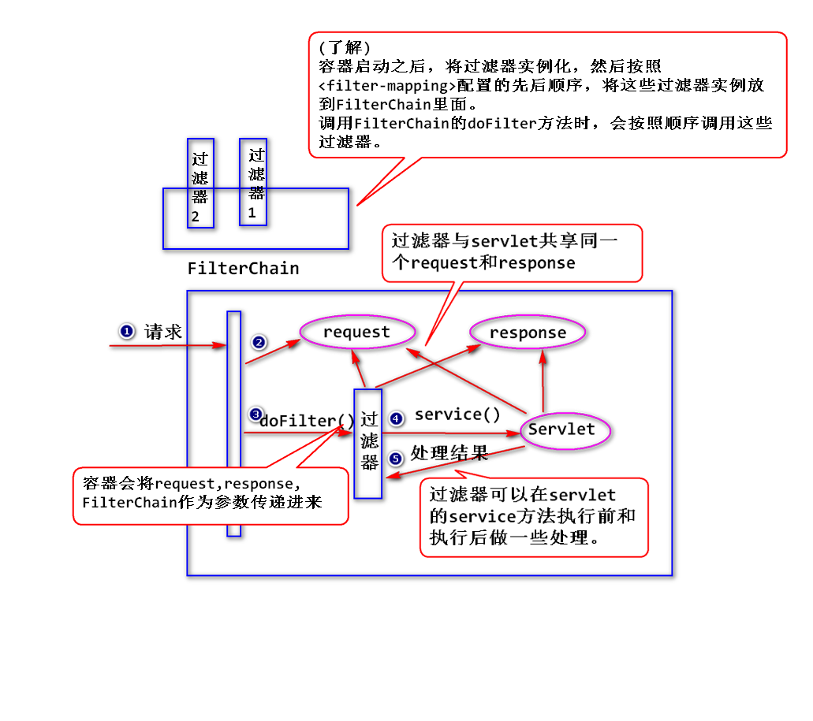
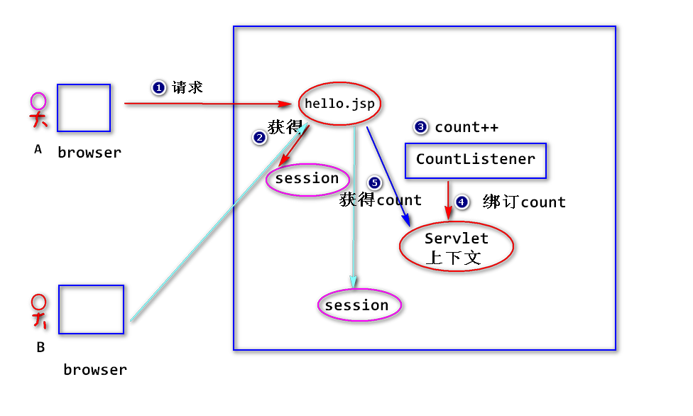

1.过滤器
(1)什么是过滤器?
Servlet规范当中定义的一种特殊的组件，用来拦截Servlet容器调用的过程。、
注：
容器收到请求之后，会先调用过滤器，再调用后续的组件，比如
调用servlet。

(2)如何写一个过滤器?
step1. 写一个java类，实现Filter接口。
step2. 在doFilter方法当中，实现拦截处理逻辑。
public class CommentFilter implements Filter{
/**
* 容器启动之后，会立即创建过滤器实例。
* 注：
* 只会创建一个实例。
*/
public CommentFilter(){
System.out.println(
"CommentFilter's constructor");
}
/**
* 容器在删除过滤器实例之前，会调用
* destroy方法(只会调用一次)。
*/
public void destroy() {
System.out.println(
"CommentFilter's destroy");
}
/**
* 容器收到请求之后，会调用过滤器的doFilter方法
* (类似于Servlet的service方法)。
* ServletRequest是HttpServletRequest的父接口，
* ServletResponse是HttpServletResponse的父接口。
* FilterChain(过滤器链)：如果调用了该
* 对象的doFilter方法，容器会继续向后调用,
* 否则，中断请求，返回处理结果。
*/
public void doFilter(
ServletRequest arg0,
ServletResponse arg1,
FilterChain arg2)
throws IOException, ServletException {
System.out.println(
"CommentFilter's doFilter begin...");
/*
* (了解)因为sun的过度设计，这儿需要做强制
* 转换(我们经常用的是子接口中的方法)。
*/
HttpServletRequest request =
(HttpServletRequest)arg0;
HttpServletResponse response =
(HttpServletResponse)arg1;
request.setCharacterEncoding("utf-8");
response.setContentType(
"text/html;charset=utf-8");
String content =
request.getParameter("content");
if(content.indexOf("狗") != -1){
//有敏感字，中断请求，返回处理结果
response.getWriter()
.println("评论包含了敏感字");
}else{
//没有敏感字，则继续向后调用
arg2.doFilter(request, response);
}
System.out.println(
"CommentFilter's doFilter end.");
}
/**
* 容器在创建好过滤器实例之后，会调用该实例的
* init方法(只会调用一次)，容器会将FilterConfig
* 对象作为参数传递过来。
* 可以利用FilterConfig来读取初始化参数,
* 也可以用来获得ServletContext。
* 注:
* ServletConfig也可以获得ServletContext。
*/
public void init(FilterConfig arg0) throws ServletException {
System.out.println(
"CommenetFilter's init");
}
}
step3. 配置过滤器。(web.xml)
<filter>
<filter-name>commentFilter</filter-name>
<filter-class>web.CommentFilter</filter-class>
</filter>
<filter-mapping>
<filter-name>commentFilter</filter-name>
<url-pattern>/comment</url-pattern>
</filter-mapping>
(3)过滤器的优先级
当有多个过滤器都满足拦截要求，则容器依据
配置的先后顺序来执行。
(4)过滤器的初始化参数
step1.配置初始化参数
<init-param>
<param-name>illegal</param-name>
<param-value>猫</param-value>
</init-param>
step2. 读取初始化参数值
String illegal =
config.getInitParameter("illegal");
(5)过滤器的优点
a.可以在不修改原有代码的基础上，为应用添加新的功能。
b.可以将多个组件相同的功能集中写在一个过滤器里面，方便
代码的维护。
2.监听器
(1)什么是监听器?
servlet规范当中定义的一种特殊的组件，用于监听servlet容器产生的
事件并进行相应的处理。
注：容器主要产生两大类事件，分别是:
1)生命周期相关的事件:
容器创建了或者销毁了request,session,servlet上下文
时产生的事件。
2)绑订数据相关的事件:
调用了request,session,servlet上下文的setAttribute,
removeAttribute方法时产生的事件。
(2)如何写一个监听器?
step1. 写一个java类，实现监听器接口。
注：依据监听的事件类型来选择实现相应的接口。
比如，要监听session对象的创建和销毁，实现HttpSessionListener
接口。
step2. 在监听器接口方法当中，实现监听处理逻辑。
step3. 配置监听器。(web.xml)
(3)统计在线人数

练习
写一个监听器，容器启动之后，将用户表(t_user)中的所有用户信息
查询出来,然后将用户信息绑订到Servlet上下文上。
step1. 将UserDAO相关的代码及配置文件拷贝过来。
step2. 写一个java类:
public class CacheListener
implements ServletContextListener{
public void contextInitialized(ServletContextEvent sce){
UserDAO dao = new UserDAO();
List<User> users = dao.findAll();
ServletContext sctx =
sce.getServletContext();
sctx.setAttribute("users",users);
}
}
step3.配置监听器。
练习
写一个过滤器，检查评论的字数，如果超过10个字，则提示
“评论字数过多”。